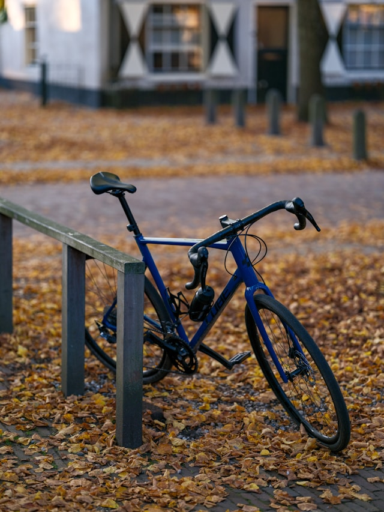

When you’re new to cycling, it’s tempting to go straight for the carbon bikes you see in races and ads. The truth is, starting on aluminium is almost always the better choice.
Why Not Carbon?
Carbon frames are impressive, but carbon is a brittle material — not ideal when you’re still developing your handling skills or learning how to care for a bike. A crash, a clumsy lean against a wall, or even overtightening a clamp can cause damage that’s expensive to repair and difficult to spot. Modern aluminium frames are excellent in quality, far more forgiving, and typically cheaper.
Steel frames are durable and have a certain appeal, but they’re heavy — not ideal for road cycling or performance riding.
Whichever material you go for, avoid bikes that are too old. Technology has moved on significantly, and newer bikes are lighter, safer, and more reliable.

Frame Size
Getting the right frame size matters more than any component upgrade. A bike that doesn’t fit will be uncomfortable, inefficient, and harder to handle. Most major brands offer online size calculators — use them, and if in doubt, go to a shop and sit on a few bikes before committing.
Buying on a Budget
There are sensible places to save money as a beginner:
- Rim brakes instead of disc brakes — perfectly functional and easier to maintain
- Quick-release wheels instead of thru-axles
- Used bikes from trusted sellers
If you’re buying used, look for a reputable brand (Canyon, Scott, Trek, Specialized, Giant, Cube, BMC, Cannondale, Ribble), an aluminium frame, and a Shimano 105 or Ultegra drivetrain — or SRAM equivalent. Check for cracks, rust, and worn drivetrain parts. If you’re not sure what to look for, bring someone who does. What looks like a bargain can quickly become an expensive repair project.
The upside: quality bikes hold their value well, so resale is always an option if you change direction.
Road, Gravel, or MTB?
Endurance road bikes have a relaxed, upright geometry — comfortable for longer rides and more forgiving than race-oriented frames. A good starting point for most riders. Race geometry is aggressive and better suited to experienced, flexible riders.
Gravel bikes are versatile — they handle tarmac, gravel, and light trails. Popular right now, and genuinely useful if you want one bike for varied terrain and commuting.
Hardtail MTB is worth considering if you’re on a tight budget or want something that doubles as a commuter. Robust, forgiving, works on trails and city roads. The downsides: heavier, less aerodynamic, and slower on group road rides.
Personally, I’d lean towards a road bike or XC hardtail over a gravel bike — but it really comes down to where and how you want to ride.
Final Thoughts
Don’t overthink it. A reliable, modern aluminium bike that fits your budget and riding style will serve you well. The best bike is the one you actually ride.
If you’re unsure, feel free to reach out — happy to help you figure out what makes sense for your situation.